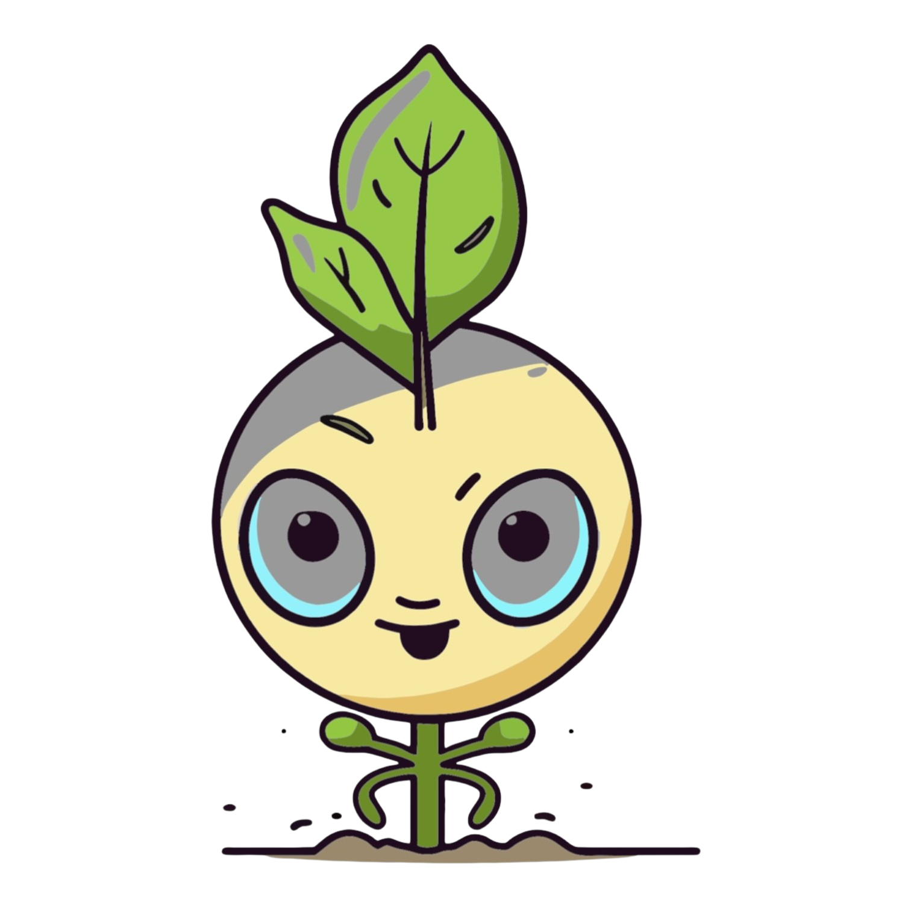

Sourdough Loaves
Long-fermented, hand-shaped, baked to a crackling crust. Classic, jalapeño cheddar, and seasonal varieties.

Bloomin' Acres started with a backyard sourdough starter and a garden bed that kept growing. Now every week we bring our long-fermented loaves, sun-kissed produce, and fresh-from-the-oven pastries right to you — made entirely by hand, with ingredients grown just steps from your door.
"Handcrafted with love, grown with intention."
Long-fermented, hand-shaped, baked to a crackling crust. Classic, jalapeño cheddar, and seasonal varieties.
Seasonal vegetables and herbs harvested fresh from our garden beds — vibrant, clean, and grown with care.
Gourmet snickerdoodles, sourdough muffins, and pantry staples that rotate with the season and the harvest.
Seeds go in the ground with intention — chosen for flavor, not just yield.
Picked at peak ripeness, brought straight from field to stand.
72-hour ferment, hand-shaped, baked hot until the crust sings.
Every loaf and basket finds a home — yours, hopefully.
Hours